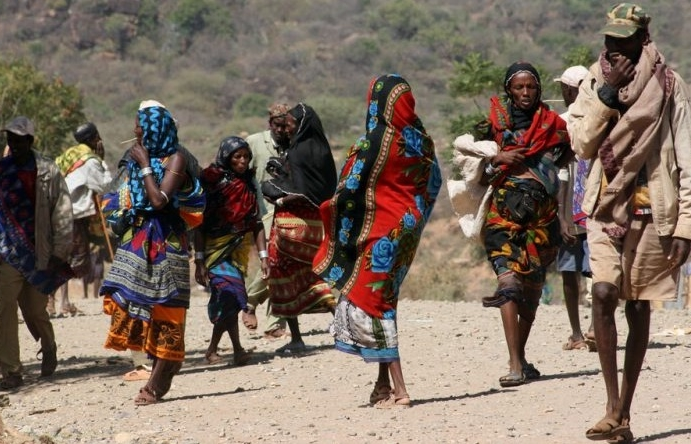

ከየፈርጁ

ሩሲያ ቢትኮይንን ለውጭ ንግድ ግብይት ለመቀበል እያሰበች መሆኑ ተነገረ

ሩሲያ ቢትኮይንን ለውጭ ንግድ ግብይት ለመቀበል እያሰበች መሆኑ ተነገረ

የ16 ዓመቱ ታዳጊ ሚሊየነር የመረጃ መረብ ሰርሳሪ ሊሆን ይችላል ተብሎ ተጠረጠረ
ሩሲያ ቢትኮይንን ለውጭ ንግድ ግብይት ለመቀበል እያሰበች መሆኑ ተነገረ
ሩሲያ ቢትኮይንን ለውጭ ንግድ ግብይት ለመቀበል እያሰበች መሆኑ ተነገረ

8 ጥቅምት 2018
አብዛኞቹ በየአካባቢው የተካሄዱ ግጭቶች መነሻቸው የሀብት እጥረትና የመሬት የይገባኛል ጥያቄ ሲሆን ሌሎቹ ግን በአገሪቱ ሰፍኗል በሚባለው የብሔር አድልዎና መገለል የተነሳ ነው። ይህ የብሔር ጥቃት በሀገሪቷ ዋና መዲና በአዲስ አበባና ዙሪያም የ58 ሰዎችን ሕይወት ከቀጠፈ በኋላ ብዙዎች ሀገሪቱ የገባችበት ብሔር ተኮር ጥቃት አስደንግጧቸዋል። ይህ ብሔር ተኮር ጥቃትና ግጭት ወደ ሥልጣን ከመጡ ስድስት ወር የሆናቸውንና በርካታ ለውጦችን ላደረጉት ጠቅላይ ሚኒስትር ዐብይ አስተዳደር ዋነኛ ተገዳዳሪ ጉዳይ ነው። ባለፉት ወራት ብቻ በአገሪቱ ካሉት ዘጠኝ ክልሎች በአምስቱ ግጭት ተከስቷል። እነዚህ ግጭቶች አንዳንዶቹ ብሔር ተኮር ሲሆኑ ሌሎቹ ደግሞ በግጦሽ መሬት፣ በውኃ ሀብት፣ በድንበር አስተዳደር መነሻነት የተቀሰቀሱ ናቸው።
ኢትዯጵያ ዘጠኙን ክልላዊ መንግሥቶች ስትመሠርት መነሻ ሐሳብ የነበረው በክልሎች መካከል ያለውን ዕድገት ለማሳለጥና ተገቢውን ውክልና ለማስፈን ነው ቢባልም የሥርዓቱ ተቺዎች ግን የአንድ ብሔር የበላይነትን ለማስፈን ነበር ይላሉ። ይህ የአንድ ብሔር የበላይነት አለበት ተብሎ ሲተች የነበረው ሥርዓት ለብሔርተኝነት መንሰራፋት እና በብሔሮች መካከል ግጭት ለመቀስቀስ ሰበብ ሆኗል በሚል ይተቻል። ከአራት ዓመት በፊት በኦሮሚያ እና በአማራ ብሔሮች የተመራው ፀረ መንግሥት ተቃውሞ የወቅቱ ጠቅላይ ሚኒስትር ኃይለማርያም ደሳለኝን በገዛ ፈቃዳቸው ከሥልጣን እንዲለቁ ምክንያት ሳይሆን አልቀረም።
የተባበሩት መንግሥታት የሕፃናት ድርጅት (ዩኒሴፍ) በነሐሴ ወር 2.8 ሚሊየን ሰዎች ከቀያቸው ተፈናቀለዋል ብሎ ያወጣው ሪፖርት የአብዛኞቹ የመፈናቀል ምክንያት በግጭትና በድርቅ ነው ሲል አስፍሯል። መቀመጫውን በጄኔቫ ያደረገውንና ሀገር ውስጥ የሚኖርን መፈናቀል የሚከታተለው ድርጅት ከ1.4 ሚሊየን በላይ ኢትዮጵያውያን ከባለፈው ታኅሣሥ ወር እስከ ሰኔ ወር ድረስ መፈናቀላቸውን አስቀምጧል። አብዛኞቹ የተፈናቀሉ ሰዎች ከሶማሌ፣ ከኦሮሚያና ከደቡብ ብሔር ብሔረሰቦችና ሕዝቦች ክልል ናቸው።
የኦነግን ወደ ሀገር ውስጥ መግባትን በማስመልከት በተደረገ የአቀባበል ዝግጅት ወቅት በተፈጠረ ግጭት በአዲስ አበባና በቡራዩ 58 ሰዎች ሕይወታቸውን አጥተዋል። በቡራዩ በነበረው ጥቃት "መሬታችንን ለቃችሁ ውጡ" የተባሉ እንዳሉ ተሰምቷል። ጥቃቱም የደረሰባቸው አብዛኞቹ ግለሰቦች የአንድ ብሔር ተወላጅ መሆናቸው በወቅቱ ተዘግቦ ነበር። ይህንንም ተከትሎ በአዲሳ አበባ ጥቃቱን የሚያወግዝ ሰልፍ ተካሄዷል።
በሀገሪቱ ከተስተዋሉ ግጭቶች ባጠቃላይ የከፋው በኦሮሚያና በሱማሌ ክልል ተወላጆች መካከል የተነሳው ነው። ግጭቱን ለማርገብ እንደ አውሮፓውያኑ በ2004 የሕዝብ ውሳኔ ላይ ቢደረሰም፤ በሁለቱ ክልል ነዋሪዎች መካከል የድንበር ግጭቱ ተባብሷል። በሕዝበ ውሳኔው መሠረት 80 በመቶው የመሬቱ ክፍል ወደ ኦሮሚያ ክልል እንዲጠቃለል ተወስኖ ነበር። ሆኖም የድንበር ወሰን አልተከለለም ነበር። ይህን ተከትሎም በአካባቢው በየጊዜው ግጭት ሲከሰት ቆይቷል። የኢትዮጵያ ሰብአዊ መብት ኮሚሽን ግጭቱ በተቀሰቀሰበት ወቅት 173 ሰዎች እንደተገደሉ ሲገልጽ፤ በአንጻሩ ተቃዋሚ ፓርቲው የኢትዮጵያ ሶሻል-ዴሞክራቲክ ፓርቲ የተገደሉት 400 ሰዎች እንደሆኑ ያትታል።። በዩኒሴፍ መረጃ መሠረት ግጭቱ ለ141,410 ሰዎች መፈናቀል ምክንያት ሆኗል።
እንደ አውሮፓውያኑ በ2018 ላይ በደቡብ ክልል ጌድዮና በኦሮሚያ ክልል ጉጂ ግጭት ዳግመኛ ሲቀሰቀስ 642,152 ሰዎች ለመፈናቀላቸው ምክንያት መሆኑ ተመልክቷል። ነሐሴ ወር ላይ መንግሥት ባወጣው መረጃ መሠረት፤ ለተፈናቃዮች 1,000 ጊዜያዊ መጠለያዎች ተዘጋጅተዋል። በዚሁ ወር የኖርዌይ የስደተኞች ካውንስል ወደ አንድ ሚሊየን የሚጠጉ ሰዎች በግጭቱ ሳቢያ እንደተፈናቀሉ አስታውቋል። እንደ አውሮፓውያኑ 2017 ላይ የኢትዮጵያ መንግሥት በቦረና፣ ሞያሌ፣ ጉጂ እንዲሁም ባሌ ዞኖች ከ20 በላይ ሰዎች በግጭት ሳቢያ አንደሞቱ አሳውቋል። ከ10,000 የሚበልጡ ሰዎች ደግሞ ወደ ጎረቤት ሀገር ኬንያ ተሰደዋል። በሐዋሳ ና ወላይታ የጉራጌና ቀቤና ብሔረሰቦች ግጭት የ 15 ሰዎችን ሕይወት የቀጠፈው እንደ አውሮፓውያኑ በ2018 ሰኔ ወር ላይ ነበር።
የአማራና ትግራይ ክልሎች የድንበር ግጭት ከሁለቱም ክልሎች በመቶዎች የሚቆጠሩ ሰዎች ለመሞታቸው ምክንያት ሆኗል። እንደ አውሮፓውያኑ በ2016 የወልቃይት ጠገዴ ማኅበረሰብ መሬታችን ያለፍቃዳችን በትግራይ ተካሏል በሚል የተቃውሞ ሰልፍ ማካሄድ ጀመሩ። የወልቃይት ጠገዴ ማኅበረሰብን በመደገፍ የተቃውሞ ሰልፉ በጎንደርና ባሕር ዳርም ቀጠለ። የቅማንት የማንነት ጥያቄን ተከትሎ በአንድ ቀን ውስጥ ከ50 በላይ ሰዎች ተገድለዋል። ሪፖርተር ጋዜጣ እንደ አውሮፓውያኑ በ2016 በነሐሴ ወር 97 ሰዎች ሕይወታቸውን ማጣታቸውን ዘግቧል።
እንደ አውሮፓውያኑ በሚያዝያ 2015 በአፋር አብሌክ አዳሊና ሲዲ ሀቡራ ጎሳዎች መካከል በተነሳው የብሔር ግጭት 15 ሰዎች ተገድለዋል።
እንደ አውሮፓውያኑ መስከረም 2018 ላይ በቤኒሻንጉል ጉሙዝ ክልል ዐሥር ሰዎች በብሔር ተኮር ጥቃት ተገድለዋል። ሟቾቹ የትግራይና የአማራ ክልሎች ተወላጆች ናቸው። 2016 መግቢያ ላይ በጋምቤላ በብሔር ግጭት 20 ሰዎች ተገድለዋል። በዩኒሴፍ መረጃ መሠረት በጥር 2018 ወደ 14,000 ልጆች ከቤተሰቦቻቸው ጋር ተለያይተዋል። በሀገሪቱ በየጊዜው እዚህም እዚያም ብሔርን መሠረት ያደረጉ ግጭቶች ይቀሰቀሳሉ። በሀገሪቱ የብሔር ፌደራሊዝም ሥርዓት ላይም ጥያቄ አጭሯል። ኢትዮጵያ ወደፊት ልትከተለው የሚገባት የአስተዳደር ሥርዓት ላይም ትኩስ ውይይትን ቀስቅሷል።